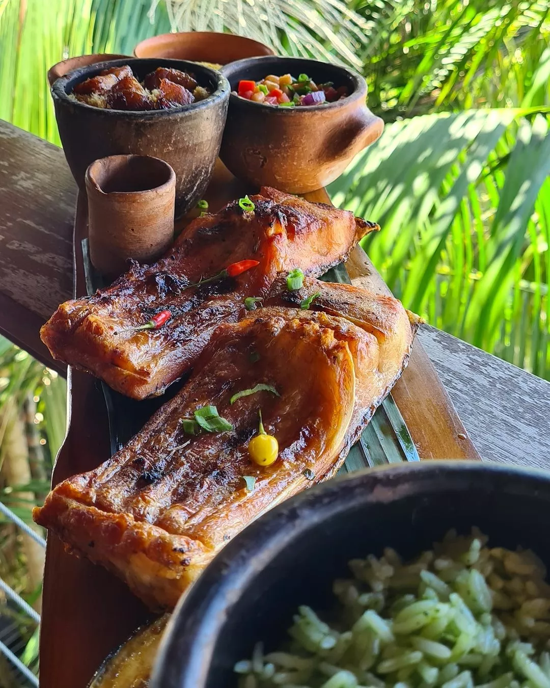
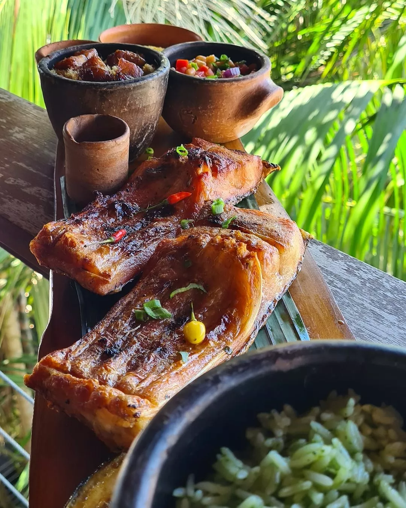

Os povos ribeirinhos tem sua origem no século XIX, época do ciclo da borracha. Com o fim desse ciclo econômico os seringueiros ficaram sem emprego, fazendo com que se espalhassem ao longo dos anos próximo ás margens dos rios no Brasil. Atualmente na sua maior parte as comunidades ribeirinhas vivem na região amazônica.


Os povos ribeirinhos são verdadeiros tesouros culturais, enraizados nas margens de rios e lagos. Eles têm uma riqueza de costumes e tradições que permeiam suas celebrações, manifestações culturais, locais e modos de vida. Para essas comunidades, as celebrações são a alma da festa e acontecem em ocasiões especiais, como rituais de pesca, colheitas ou eventos religiosos, com muita dança, canto, trajes tradicionais e uma culinária de dar água na boca. É uma experiência cultural incrível e um deleite para os sentidos!
Os povos ribeirinhos arrasam na arte! O artesanato, pinturas, esculturas, tecelagem e danças são alguns dos jeitos que eles têm de expressar a riqueza da natureza, figuras religiosas, rituais e a vida cotidiana. É um verdadeiro show de cores, formas e movimentos que nos transporta para seus mundos encantadores.

.jpg) 

Essa música é a essência da vida do caboclo ribeirinho, com histórias do trabalho do agricultor, pescador e tudo sobre a fauna e flora da região.
As casas palafitas são verdadeiras obras-primas, um símbolo de astúcia e força, que contam uma história incrível sobre a conexão única com a natureza.
A cozinha ribeirinha é uma verdadeira festa dos sentidos, exaltando os tesouros naturais dos rios e florestas em pratos saborosíssimos e com um toque especial.